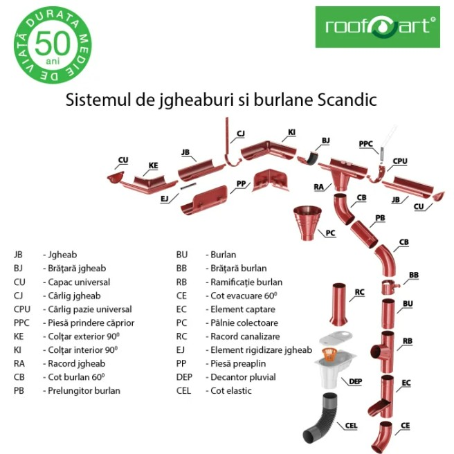
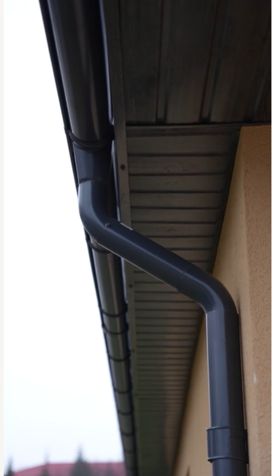
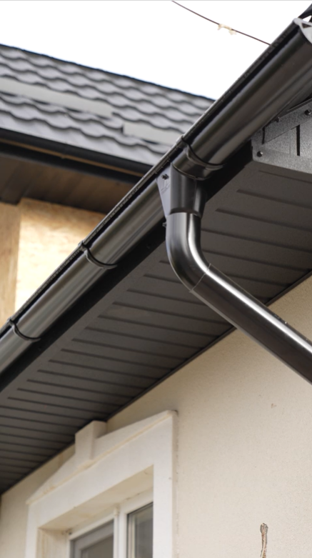
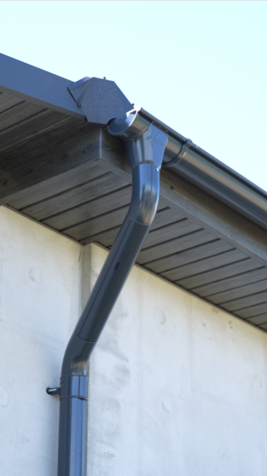
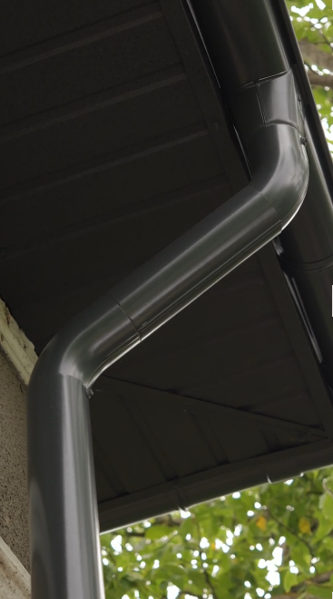

Защищает фундамент и цоколь
Предотвращает неконтролируемый сток воды рядом с домом и снижает риск загрязнения, вымывания грунта или повторяющихся протечек.
Желоба и трубы, правильно подобранные для отвода воды, защиты фасада и аккуратной интеграции с любым типом кровли.
Правильно подобранная водосточная система принимает воду с кровли и отводит ее контролируемо, чтобы защитить фасад, цоколь и фундамент. Правильный выбор означает меньше вмешательств, более чистый монтаж и цельный результат для всего дома.
Предотвращает неконтролируемый сток воды рядом с домом и снижает риск загрязнения, вымывания грунта или повторяющихся протечек.
Вода собирается и отводится организованно, без неэстетичных следов на стенах и чрезмерного разбрызгивания возле входа.
Размер, материал и аксессуары должны соответствовать площади кровли, длине карниза и требуемому уровню отделки.
До выбора цвета и материала нужно определить подходящий размер. Так мы избегаем недооцененной или слишком большой системы для простого проекта.
Самый распространенный вариант для небольших и средних домов, когда нужен баланс между пропускной способностью, видом и бюджетом.
Это рекомендуемый размер в большинстве классических жилых проектов.
Рекомендуется для более больших кровель, домов с высоким водостоком или зданий, где система должна безопасно отводить больший объем воды.
Это правильный выбор, когда проекту нужна большая пропускная способность и более прочная конфигурация.
Три варианта - это не просто разные материалы, а решения для трех типов проектов: премиальный баланс, практичная эффективность или top-уровень на очень долгий срок.
Самый сбалансированный вариант для современных жилых проектов: премиальный вид, хорошая защита и полная цветовая палитра.
Простое и функциональное решение для проектов, где главный фокус на эффективности, надежности и более контролируемой стоимости.
Решение top-класса для клиентов, которым нужен выразительный вид, очень долгий срок службы и особый архитектурный характер.
| Вариант | Для кого подходит | Основные технические данные | Гарантия |
|---|---|---|---|
| Color (сталь SSAB) | Новые дома, premium-ремонты и проекты, где важен и внешний вид | от 0,57 мм, цинк 275 г/м², GreenCoat RWS 35 um | 30 лет от коррозии / 15 лет на цвет |
| Zinc | Практичные и эффективные проекты с контролируемым бюджетом | от 0,57 мм, цинк 275 г/м² | 10 лет от коррозии |
| Copper | Premium-дома, виллы и проекты, где нужна максимальная долговечность | от 0,50 мм, медь 99% чистоты | пожизненно* |
Все варианты можно настроить в круглой системе 125/87 мм или 150/100 мм, в зависимости от площади и конфигурации кровли.
После выбора размера и материала подбираем финиш, который лучше всего сочетается с кровлей, столяркой и стилем дома.
Мы поставляем не только желоба и трубы, а все детали, необходимые для цельного монтажа, правильной работы и аккуратного финального вида.

Несколько реальных примеров монтажа, чтобы увидеть интеграцию системы на разных типах кровли и фасада.

Жилой объект с компактной трассой и аккуратной интеграцией по карнизу.

Полная конфигурация с эффективным сбором воды в угловой зоне и контролируемым отводом.

Чистая реализация на фасаде с совместимыми аксессуарами и единым финишем.

Пример проекта с хорошей защитой при сильных осадках и удобным обслуживанием.
Хорошо рассчитанная система - это не просто техническая деталь. Она снижает скрытые расходы, выглядит лучше и делает монтаж более предсказуемым.
Вода не стекает свободно по стенам и зоне цоколя, значит меньше следов, грязи и разрушений со временем.
Полная конфигурация со всеми правильными аксессуарами уменьшает импровизацию и помогает монтажной бригаде работать аккуратно.
Продуманную систему легче проверять, а при необходимости отдельные элементы можно заменить без сложных вмешательств в кровлю.
Цвет, финиш и пропорции системы дополняют кровлю и формируют более профессиональный общий вид.
Вам не нужно выбирать по таблицам в одиночку. Вы отправляете базовые данные, а мы рекомендуем систему под ваш проект.
Населенный пункт, тип дома и приблизительные размеры кровли или карниза.
Определяем размер, материал, цвет и аксессуары для полной конфигурации.
Помогаем с продуктом, правильной конфигурацией, нужными аксессуарами и логистикой для проекта.